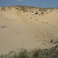

Достопримечательности Фроловского района
Фроловский район (официальный сайт  )
расположен в центре Волгоградской области.
)
расположен в центре Волгоградской области.
По территории района проходит федеральная трасса М6 «Каспий».
Центром является г. Фролово.
На территории района находится уникальный в своем роде природный памятник - Арчединско-Донские пески.
 )
)
Интерактивная карта Фроловского района с достопримечательностями (увеличить )
Арчединско-Донские пески
Арчединско-Донские пески - государственный ботанический памятник природы, расположенный на территории Серафимовичского и Фроловского районов. Место уникальное в своем роде. Именно здесь пролегала граница последнего обледенения. Таявшие ледники и намыли эти горы песка. Арчединско-Донские пески представляют собой маленький кусочек пустыни (а не полупустыни, как принято считать), площадью около 200 тысяч гектаров.